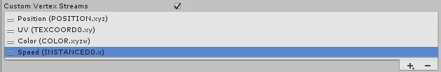

Important: The Built-In Render Pipeline is deprecated and will be made obsolete in a future release.
It remains supported, including bug fixes and maintenance, through the full Unity 6.7 LTS lifecycle.
For more information on migration, refer to Migrating from the Built-In Render Pipeline to the Universal Render Pipeline and Render pipeline feature comparison.
The examples above only use the default vertex stream setup for particles. This includes a position, a normal, a color, and one UV. However, by using custom vertex streams, you can send other data to the shader, such as velocities, rotations and sizes.
In this next example, the shader is designed to display a special effect, which makes faster particles appear brighter, and slower particles dimmer. There is some extra code that brightens particles according to their speed, using the Speed Vertex Stream. Also, because this shader assumes the effect will not be using texture sheet animation, it is omitted from the custom stream struct.
Here is the full Shader:
Shader "Instanced/ParticleMeshesCustomStreams"
{
Properties
{
_MainTex("Albedo", 2D) = "white" {}
}
SubShader
{
Tags{ "RenderType" = "Opaque" }
LOD 100
Pass
{
HLSLPROGRAM
#pragma exclude_renderers gles
#pragma vertex vert
#pragma fragment frag
#pragma multi_compile_instancing
#pragma instancing_options procedural:vertInstancingSetup
#define UNITY_PARTICLE_INSTANCE_DATA MyParticleInstanceData
#define UNITY_PARTICLE_INSTANCE_DATA_NO_ANIM_FRAME
struct MyParticleInstanceData
{
float3x4 transform;
uint color;
float speed;
};
#include "UnityCG.cginc"
#include "UnityStandardParticleInstancing.cginc"
struct appdata
{
float4 vertex : POSITION;
half4 color : COLOR;
float2 texcoord : TEXCOORD0;
UNITY_VERTEX_INPUT_INSTANCE_ID
};
struct v2f
{
float4 vertex : SV_POSITION;
half4 color : COLOR;
float2 texcoord : TEXCOORD0;
};
sampler2D _MainTex;
float4 _MainTex_ST;
v2f vert(appdata v)
{
v2f o;
UNITY_SETUP_INSTANCE_ID(v);
o.color = v.color;
o.texcoord = v.texcoord;
vertInstancingColor(o.color);
vertInstancingUVs(v.texcoord, o.texcoord);
#if defined(UNITY_PARTICLE_INSTANCING_ENABLED)
UNITY_PARTICLE_INSTANCE_DATA data = unity_ParticleInstanceData[unity_InstanceID];
o.color.rgb += data.speed;
#endif
o.vertex = UnityObjectToClipPos(v.vertex);
return o;
}
half4 frag(v2f i) : SV_Target
{
half4 albedo = tex2D(_MainTex, i.texcoord);
return i.color * albedo;
}
ENDHLSL
}
}
}
The shader includes UnityStandardParticleInstancing.cginc, which contains the default instancing data layout for when Custom Vertex Streams are not being used. So, when using custom streams, you must override some of the defaults defined in that header. These overrides must come before the include. The example above sets the following custom overrides:
Firstly, there is a line that tells Unity to use a custom struct called ‘MyParticleInstanceData’ for the custom stream data, using the UNITY_PARTICLE_INSTANCE_DATA macro:
#define UNITY_PARTICLE_INSTANCE_DATA MyParticleInstanceData
Next, another define tells the instancing system that the Anim Frame Stream is not required in this shader, because the effect in this example is not intended for use with texture sheet animation:
#define UNITY_PARTICLE_INSTANCE_DATA_NO_ANIM_FRAME
Thirdly, the struct for the custom stream data is declared:
struct MyParticleInstanceData
{
float3x4 transform;
uint color;
float speed;
};
These overrides all come before UnityStandardParticleInstancing.cginc is included, so the shader does not use its own defaults for those defines.
When writing your struct, the variables must match the vertex streams listed in the Inspector in the Particle System renderer module. This means you must choose the streams you want to use in the Renderer module UI, and add them to variable definitions in your custom stream data struct in the same order, so that they match:

The first item (Position) is mandatory, so you cannot remove it. You can freely add/remove other entries using the plus and minus buttons to customize your vertex stream data.
Entries in the list that are followed by INSTANCED contain instance data, so you must include them in your particle instance data struct. The number directly appended to the word INSTANCED (for example zero in INSTANCED0 and one in INSTANCED1) indicates the order in which the variables must appear in your struct, after the initial “transform” variable. The trailing letters (.x .xy .xyz or .xyzw) indicate the variable’s type and map to float, float2, float3 and float4 variable types in your shader code.
You can omit any other vertex stream data that appears in the list, but that does not have the word INSTANCED after it, from the particle instance data struct, because it is not instanced data to be processed by the shader. This data belongs to the source mesh, for example UV’s, Normals and Tangents.
The final step to complete our example is to apply the speed to the particle color inside the Vertex Shader:
#if defined(UNITY_PARTICLE_INSTANCING_ENABLED)
UNITY_PARTICLE_INSTANCE_DATA data = unity_ParticleInstanceData[unity_InstanceID];
o.color.rgb += data.speed;
#endif
You must wrap all the instancing code inside the check for UNITY_PARTICLE_INSTANCING_ENABLED, so that it can compile when instancing is not being used.
At this point, if you want to pass the data to the Fragment Shader instead, you can write the data into the v2f struct, like you would with any other shader data.
This example describes how to modify a Custom Shader for use with Custom Vertex Streams, but you can apply exactly the same approach to a Surface Shader to achieve the same functionality.